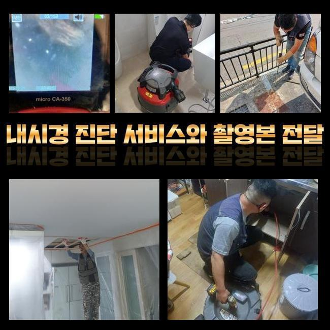
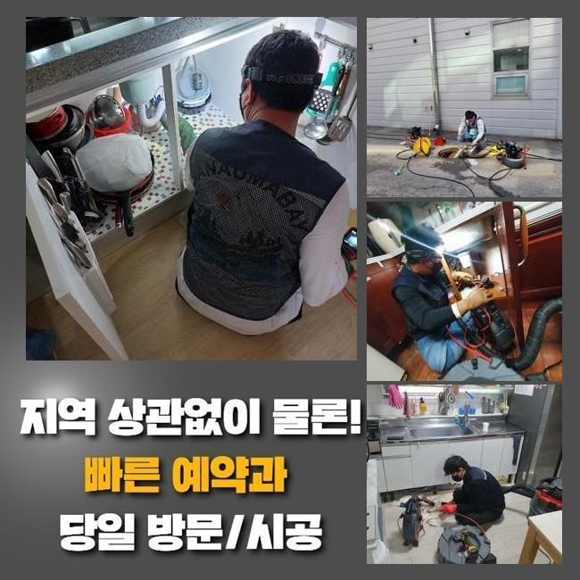
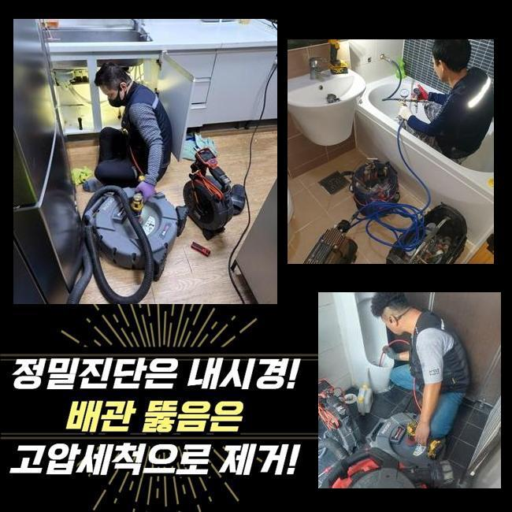
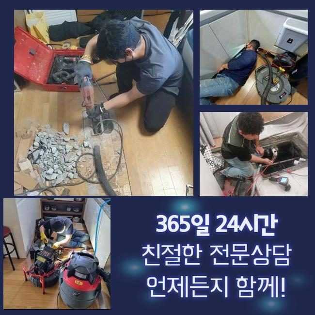
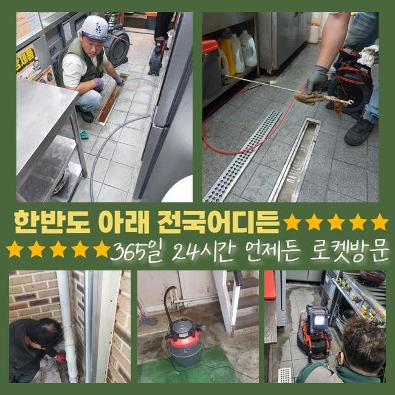
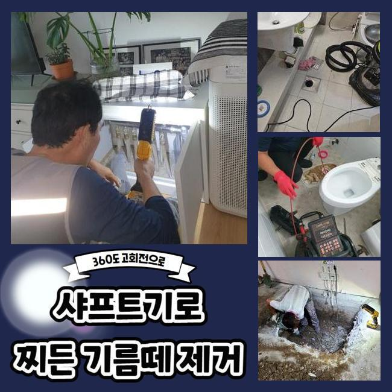

🏠 광진구 구의동하수구막힘 자양동 하수구청소장비 출장설비
용인 싱크대막힘 전문 시공 후기

📋 작업 개요
- 위치: 용인
- 서비스 유형: 싱크대막힘, 하수구막힘, 배관막힘, 뚫는업체, 배관청소, 고압세척, 악취차단
- 작업 일시: 2025. 4. 8. 1:02
- 업체명: 하수구수사대 (010-5615-2118)
🔍 문제 상황
광진구 구의동하수구막힘 자양동 하수구청소장비 출장설비
하수관이 움직이지 않으면 마트에서 구할 수 있는 여러 종류의 클리너를 써서 스스로 해보시려는 분이 많을텐데요
막대기같은 것을 써서 뚫겠다는 계획을 하시기도 합니다
허나 이런 방법으로는 입구 근처의 무른 오염물질을 없애는 데에는 좋을 수 있겠지만요
막힘을 만든 대상이 저 아래에 누적되어온 이물질로 중단이 된 거라면 흐름을 회복하기가 힘듭니다
고객님 선에서 통로를 만들어보고 실패할 경우에는 한시라도 빨리 전문가에게 서비스를 요청해야 해요
일상에서 물을 단시간 동안이라도 이용하지 못한다면 여러 불편함을 낳게 됩니다
개수대에 음식물이 쌓여서 강렬한 악취가 실내에 확산될 수 있고 날파리의 출현까지 형성할 수 있어서 곤혹스러울 수 있습니다
아파트 빌라가 아닌 업무를 하는 사무실 내부에서 싱크대 물이 안빠진다고 도와달란 연락을 받고 찾아가게 되었습니다
회사 내 싱크대의 경우 소량의 음식물과 기름기가 보여서 종종 문제가 생기기도 한다고 미리 말씀을 드렸습니다
무슨 문제점이 있는지는 싱크대막힘이 생긴 지점으로 가서 여러 검사를 걸어봐야 알아낼 수 있으므로 스케줄을 잡고 가서 무엇이 잘못된 것인지 검토해보기로 했어요

🔎 원인 분석
💡 전문가 진단: 정밀 진단 장비를 사용하여 슬러지의 고착 여부를 판명하고 타격/세척 작업을 실시했습니다.
채비를 하고 작업지에 도착하자마자 싱크대 하부에 있는 하부장 문을 열어서 개수대와 배수구를 이어주는 주름진 파이프를 해체해 주었습니다
물이 빠지도록 하려면 우선은 어떻게 생긴 오염물질이 속에서 통로를 봉쇄하고 있는지 검사를 해봐야 합니다
대상을 파악하고 효력이 있을 장치들로 맞춤형 작업을 걸어주는 것이 빠져서는 안됩니다
작업의 첫 단계는 작업 구역과 면적을 알아보기 위해서 배관 카메라를 삽입하는 단계입니다
거의 찰랑찰랑댈 정도로 물기가 누적되어있는 수준이 심해서 역행이 될 수 있어서 석션장비를 활용해서 고인 물을 쫙 삭제해주었습니다
탕비실을 못쓰니 불편해서 긴 막대를 쥐고 뚫어본 적 있다고 하셨고 저희를 부르기 직전에도 뒤적여보았지만 물이 전혀 배출되지 못했다 합니다
카메라를 점차 아래로 진입하여 관로 내부를 살펴보니 곰팡이까지 심각하게 유발되어 있었고 가득 뭉쳐진 기름물질이 존재감을 드러내고 있었네요
규모도 크기도 했고 딱딱하게 결합돼서 석션기만 가지고는 없애기 쉽지 않았어요
흡수시키는 동작으로는 목표달성이 안될 듯 하여 회전력 기반의 샤프트로 주방배관 전체를 깨끗하게 닦아내는 작업을 시작해 보기로 했습니다
강한 드릴에 샤프트를 이어주면 말단의 체인이 배관에 붙은 끈적한 기름막을 해체시켜줍니다
샤프트라는 기기는 거의 모든 직경의 배수로에 두루 활용할만큼 섬세한 크기의 튜브를 탑재하고 있어서 간섭이 생기지 않고 안정감있게 배관청소를 시행할 수 있습니다

🔧 작업 과정
켜켜이 쌓여온 물질을 깨부수는 작업도 잘 하지만 갈고리를 통해 오물을 걷어내는 등 쓰임새가 많습니다
이번에도 샤프트 작업을 필두로 수월하게 방해 요소를 정리했습니다
근처에서 보시던 고객분이 강한 물줄기를 쏘는 고압수로 해결을 해줄 수는 없냐고 질문을 하시더라고요
대규모 공장 식당과 같이 기름때가 대량으로 유입되는 때에는 고압 세척을 적용할 수도 있습니다
이물질이 많으면 강한 도구가 발동되어야 하지만 막힘이 과하지 않아보인다면 석션 샤프트같은 장비만 써서도 얼마든지 물길을 뚫을 수 있어요
기동력이 좋은 것이 샤프트의 고유한 이점 중의 한 파트입니다!
샤프트기만 사용하기 때문에 작업에 걸리는 시간도 줄어들게 됩니다
끈적이는 슬러지들이 다량 달라붙은 구간을 풀어주는 게 과제였기 때문에 적당한 정도로 맞춰가면서 관로 안 세척을 점진적으로 진행했습니다
빨리 끝내려고 출력을 올려 장치를 돌리게 되면 파이프의 손상이 되어 문제가 커지니 안전한 정도로만 청소를 해드린답니다
유막이 두툼하게 누적됐다면 여러차례 지속적으로 작업하는 게 완성도를 높이는데요
날림으로 청소하지 않고 측면을 수시로 확인하며 추가적인 작업을 해줘야 하수도 흐름이 정상화가 됩니다
이번 청소도 마무리 과정에 진입했으며 통로가 잘 나왔는지 마무리 체크를 해주려 다시금 주의 깊게 배관 카메라를 넣어봤어요
여기저기 말라붙었던 슬러지가 모두 없어졌나 시공해줬던 파이프를 재점검 해보며 좀 더 정리해야 할 곳이 없는지를 최종검사해요
재작업까지 끝내고 카메라 장비를 통해서 내부를 확인했는데 하수구의 안쪽이 말끔하게 정화된 결과를 얻을 수 있었어요
방해 요인이 없어졌음을 봤으니 마침내 트랩을 제자리에 두고 통수가 잘 나오는지 확인했어요
이와 같은 통수테스트는 관로에 차단되는 부분 없이 싱크대 물이 내려가는지 체크하는 작업입니다
통수 진단을 해보니 하수배관이 순조롭게 돌아가더라고요!
다량의 물을 흘려봐도 시원시원하게 나갔고 거꾸로 치솟는 현상이나 느릿느릿해지는 증세도 없더라고요


✅ 작업 완료
말끔하게 정화됐으니 싱크대를 활용할 때에도 스물스물 올라오는 냄새 없는 환경에서 기분 좋게 이용하게 되실 거예요
마무리 정리를 하면서 작업한 분량을 봤는데 방출된 노폐물이 눈이 휘둥그레질 정도로 많은 분량이었습니다
사무실 내에 설치된 싱크대는 사용 빈도가 많지 않더라도 배수가 되지 않는다면 민첩하게 처리하는 게 중요함을 알려드립니다
예방하는 게 베스트지만 막히는 상황에 봉착했을 때 보다 빠른 해결이 못지 않게 중요함을 전달 드리고 싶습니다
갑작스레 정상적으로 운영되던 싱크대가 가로막히는 사고가 터지면 전문진의 작업을 통하여 되돌릴 수 있을 거예요!



⚠️ 주방 싱크대 배관 막힘 예방 수칙
- ✅ 기름기가 묻은 식기나 프라이팬은 설거지 전 키친타올로 반드시 기름때를 닦아내세요.
- ✅ 주기적으로 싱크대 개수대에 뜨거운 물을 가득 받아 한 번에 내려 배관 내부 기름을 씻어내세요.
- ✅ 배수구 거름망을 미세한 필터로 사용하시고 음식물 찌꺼기가 틈으로 새어 들지 않게 관리하세요.
- ✅ 베이킹소다와 식초를 뜨거운 물과 함께 일주일에 한 번씩 부어주면 배관 살균과 막힘 예방에 좋습니다.
💡 핵심 정리
- 확실한 장비 작업(내시경 점검 및 샤프트 스케일링)으로 원인을 뿌리 뽑습니다.
- 작업 후 1년 이내에 동일한 부위 재발 시 100% 무상 A/S 서비스를 보장합니다.
- 서울 · 경기 · 인천 전 지역에 24시간 언제든 긴급 출동할 수 있도록 항시 대기 중입니다.
❓ 자주 묻는 질문 (FAQ)
🚨 용인 싱크대막힘 문제로 고민이신가요?
정확한 원인 진단과 확실한 시공으로 재발 없는 해결을 약속드립니다.
24시간 긴급 출동 | 서울 · 경기 · 인천 전지역 | 1년 내 재발 시 무상 A/S